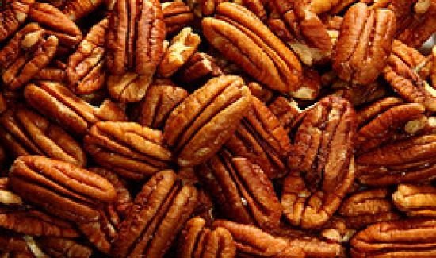

El Pecano - Carya illinoinensis, es un árbol que no es originario del Perú, pero ha sido adoptado desde hace muchos siglos, desde que llegó durante el Virreinato y su fruto tuvo una extraordinaria acogida siendo actualmente ya parte de la amplia y famosa gastronomía peruana.
